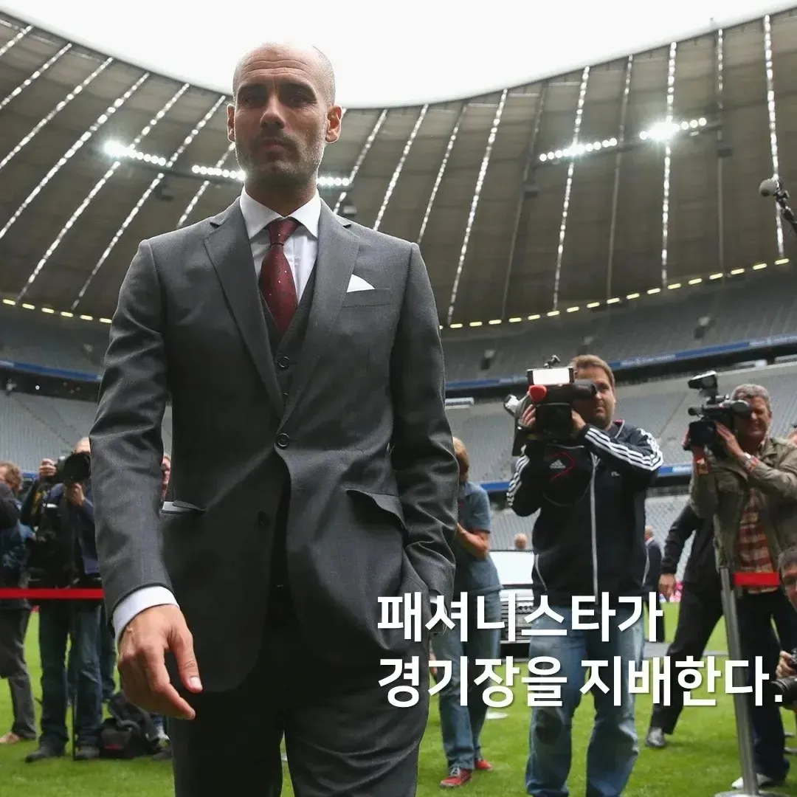
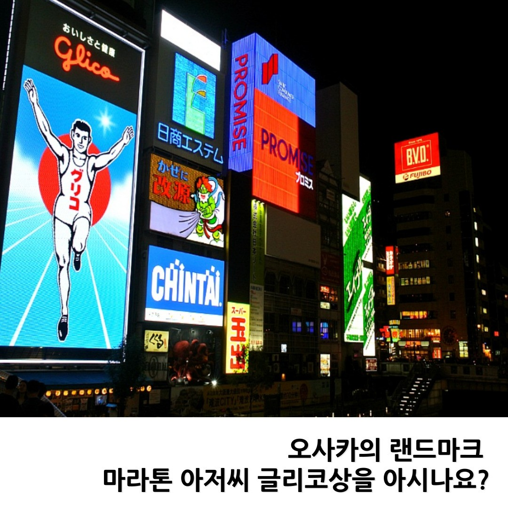
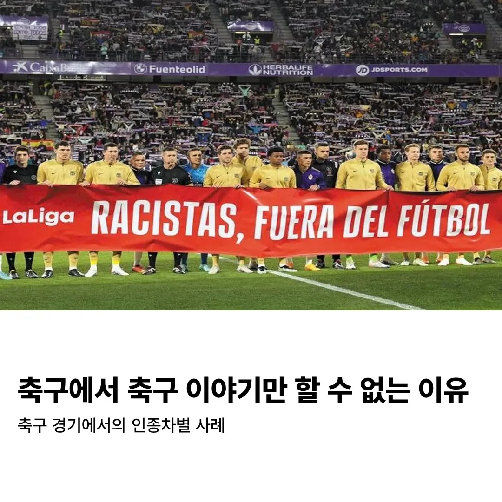
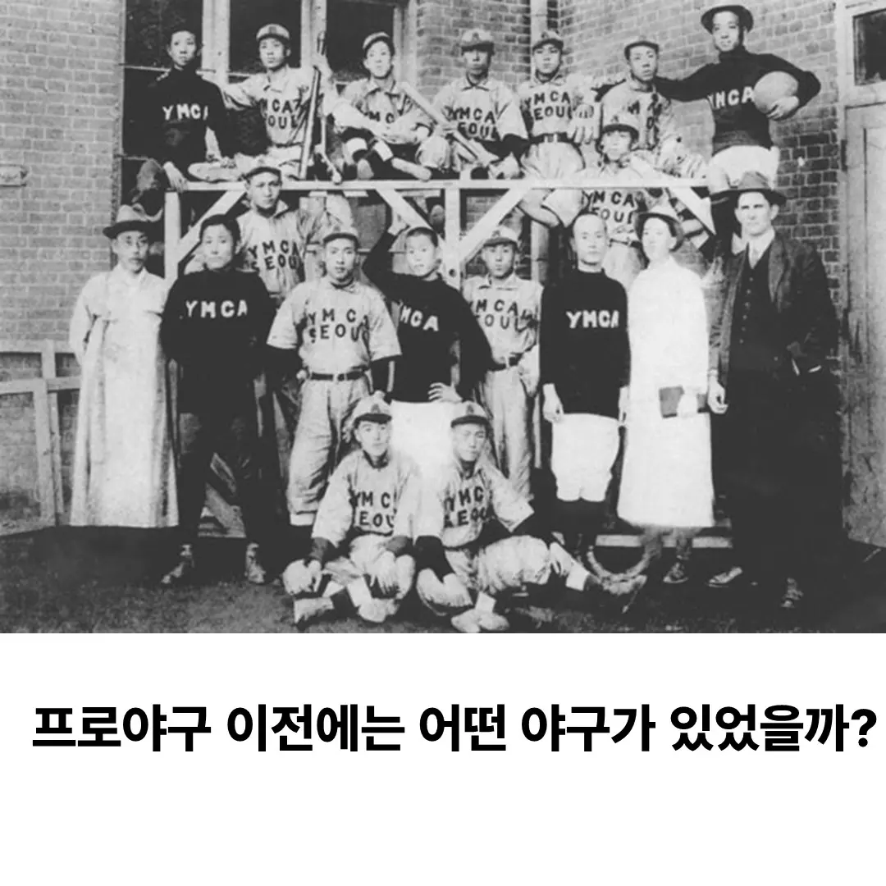
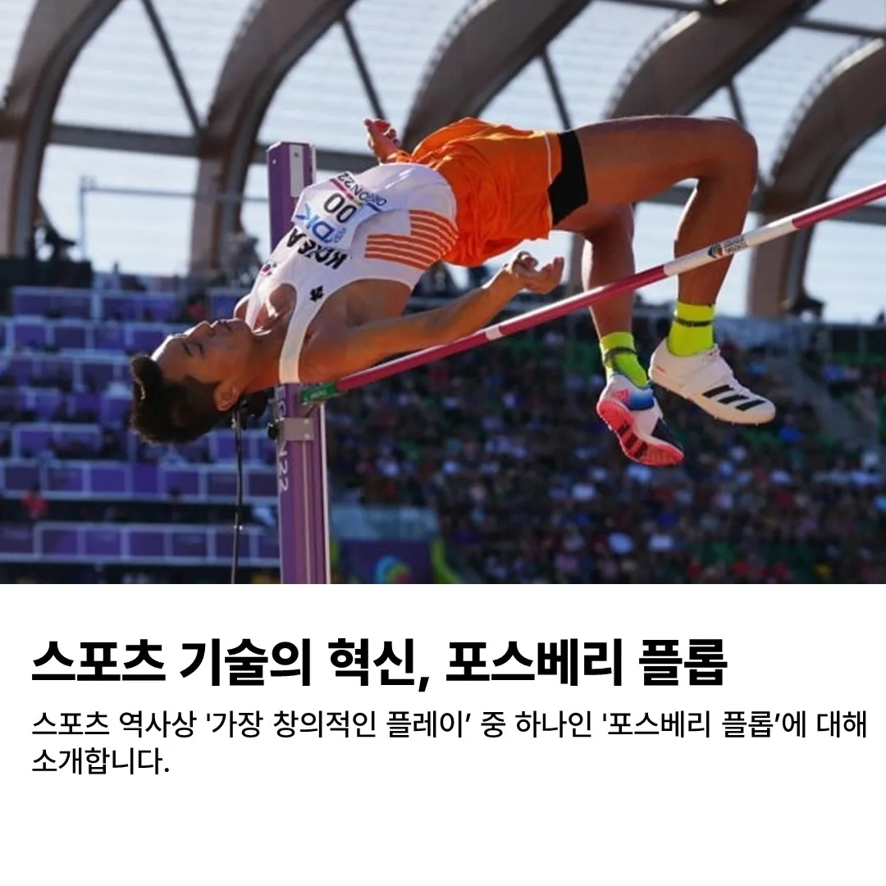
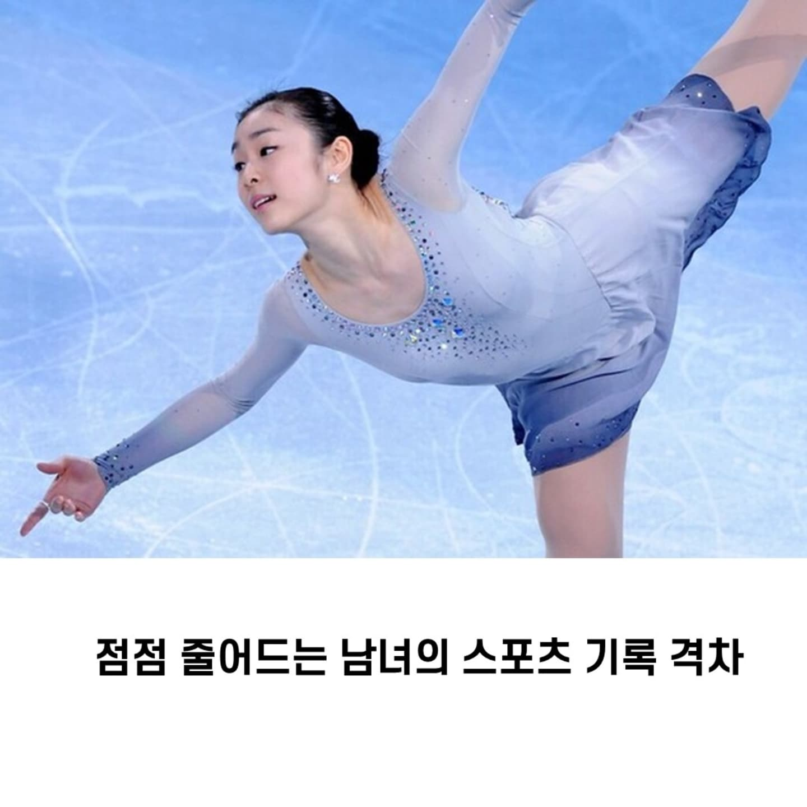
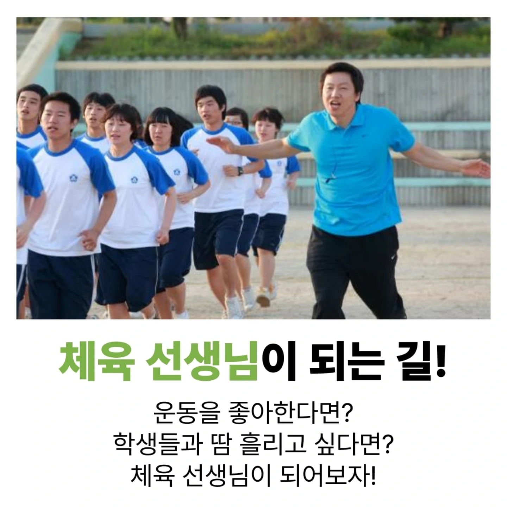
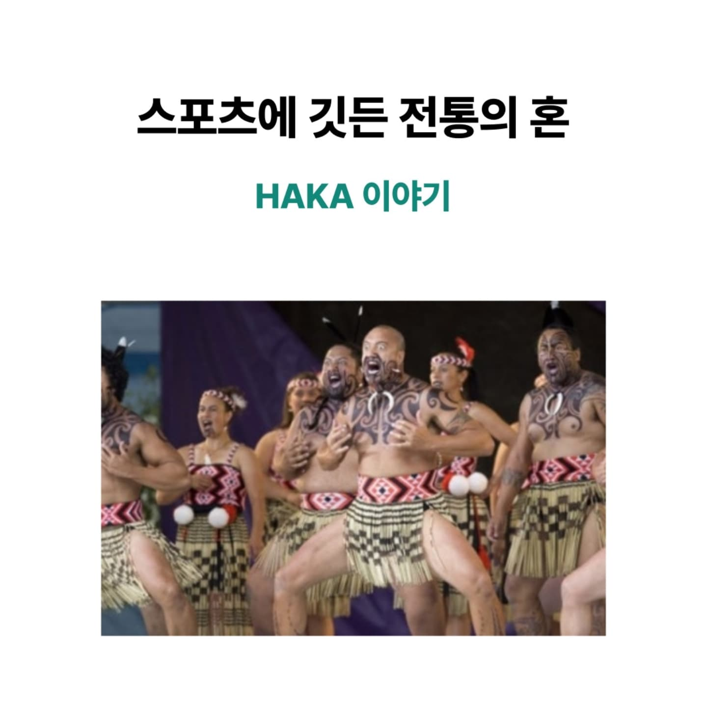

01

감독들은 왜 다른 옷을 입을까?
야구는 유니폼, 축구는 정장·스니커즈, 씨름은 한복. 종목마다 다른 감독 복장의 규정.
2023.03.0602
기후변화와 스포츠의 위기
2080년대엔 동계올림픽을 열 수 있는 도시가 몇 곳뿐? 이상기후가 스포츠를 위협한다.
2023.03.2003

오사카의 상징과 마라토너
도톤보리 글리코 광고판의 실제 모델, 그리고 '54년 만에 완주한' 가나구리 시조 이야기.
2023.04.0104
장비가 기록을 바꾼다
탄소섬유 밑창, 전신 수영복… 기술은 어디까지가 실력이고 어디부터가 '도핑'일까?
2023.05.0105

축구와 인종차별
비니시우스 사건부터 손흥민까지 — 그라운드 위 차별과 이를 막기 위한 규정들.
2023.06.1806
운동과 음악의 과학
'합법적 도핑'이라 불리는 음악. 즐거움 28%↑, 산소섭취 7%↓의 비밀.
2023.06.1907

프로야구 이전의 야구
선교사가 들여온 야구, 고교야구 전성기, 그리고 1000만 관중 시대까지의 여정.
2023.08.0708
스포츠 음료의 시작
플로리다대 'Gators'를 위해 만든 음료가 세계 1위 스포츠 드링크가 되기까지.
2023.08.1409

스포츠 기술의 혁신
무명 선수가 바꾼 높이뛰기의 역사, '배면뛰기'는 어떻게 표준이 되었나.
2023.09.1110
e스포츠와 페이커 이상혁
슬럼프를 이겨낸 '언킬러블 데몬킹', 그리고 롤드컵 3연패·통산 6회 우승의 대기록.
2023.11.2011

줄어드는 남녀 기록 격차
지구력 종목에서 좁혀지는 격차, 울트라마라톤에선 오히려 여성이 앞서는 이유.
2024.10.1812

체육 선생님이 되는 길
사범대에서 임용고시까지 — 체육교사가 하는 일과 되기 위한 진로 로드맵.
2025.06.2713

스포츠에 깃든 전통의 혼
올블랙스의 하카(HAKA), 마오리족 전사춤에 담긴 민족의 기억과 살아있는 문화.
2025.08.1114
일본의 학교 스포츠클럽
중학생 85%가 참여하는 '부카츠', 오타니를 만든 인성교육과 '블랙 부카츠'의 그늘.
2025.09.19